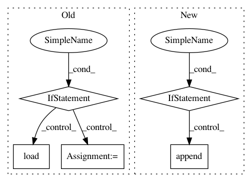

f688c3c4a8c254bf5cdefd4e2e61587c0ef7a46e,src/preprocess.py,,build_tasks,#Any#,63
Before Change
// 4) Index tasks using vocab, using previous preprocessing if available.
preproc_file = os.path.join(args.exp_dir, args.preproc_file)
if os.path.exists(preproc_file) and not args.reload_vocab and not args.reload_indexing:
preproc = pkl.load(open(preproc_file, "rb"))
save_preproc = 0
else:
preproc = {}
for task in tasks:
if task.name in preproc:
train, val, test = preproc[task.name]
task.train_data = train
After Change
if not os.path.isdir(preproc_dir):
os.mkdir(preproc_dir)
preproc_file_names = []
if not args.reload_vocab and not args.reload_indexing:
for file in os.listdir(preproc_dir):
preproc_file_names.append(file)
for task in tasks:
if task.name in preproc_files:
train, val, test = get_task_generator(task.name)
task.train_data = train
In pattern: SUPERPATTERN
Frequency: 3
Non-data size: 5
Instances
Project Name: jsalt18-sentence-repl/jiant
Commit Name: f688c3c4a8c254bf5cdefd4e2e61587c0ef7a46e
Time: 2018-06-27
Author: jan.hula@osu.cz
File Name: src/preprocess.py
Class Name:
Method Name: build_tasks
Project Name: pantsbuild/pants
Commit Name: 9a7981e7680543d5ca733de31bc8ea3173e5ce2b
Time: 2013-04-09
Author: markcc@foursquare.com
File Name: src/python/twitter/pants/tasks/java_compile.py
Class Name: JavaCompile
Method Name: execute_single_compilation
Project Name: studioml/studio
Commit Name: bb6b2d059ad7b8a231d9f8015b41e60f033eaf76
Time: 2017-08-04
Author: peter.zhokhov@sentient.ai
File Name: studio/model.py
Class Name:
Method Name: get_config